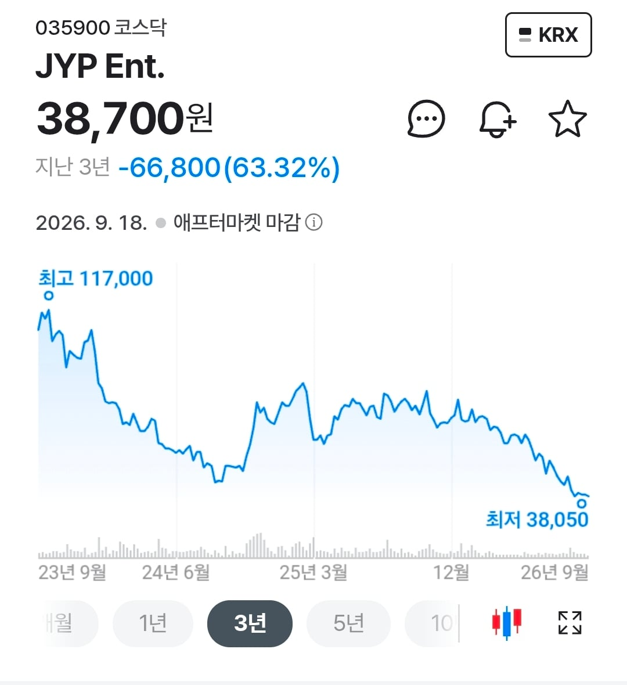

Jyp 엔터의 주가는 지난 몇년간 최고가 117000원에서 38050원으로 우하향해옴
근데 그 이유를 이제서야 알 거 같음
지옥이 얼마나 무서운지 성경 공부를 하며 알게 된 박진영은
아마도 천국에 가고자 주가를 낮추고 있는게 아닌가 싶음 ㅋㅋ
"낙타가 바늘귀로 나가는 것이 부자가 하나님의 나라에 들어가는 것보다 쉬우니라"
(마태복음 19장 24절)

Jyp 엔터의 주가는 지난 몇년간 최고가 117000원에서 38050원으로 우하향해옴
근데 그 이유를 이제서야 알 거 같음
지옥이 얼마나 무서운지 성경 공부를 하며 알게 된 박진영은
아마도 천국에 가고자 주가를 낮추고 있는게 아닌가 싶음 ㅋㅋ
"낙타가 바늘귀로 나가는 것이 부자가 하나님의 나라에 들어가는 것보다 쉬우니라"
(마태복음 19장 24절)
종교에는 똑똑한것과 상관이없음.. 정말 믿음의 영역이기때문에
그러니까. 그게 너무 신기함.. 꼭 나쁘다기보다는.. 내로라는 석학들도 종교를 가진 분들이 많으니깐...
저게 개씹구라 소설이란걸 왜 생각못할까
너무 자기 좋을 대로 해석하는 거 아닌가? 교인들이 편하게 행복하게 즐기는 게 어때서. 남 힘든거 까지 다 이해해 하는 게 비현실적인거 아냐?
이거 완전 공산주의잖아?
진짜 말 그대로 해석하면 못하는게 존나 많긴함
해석이고 나발이고 반지의 제왕에 빠져서 사우론 진짜로 있다고 믿는새끼랑 다를게 없음
하나님은 자기를 불신했단이유로 사람을 평생 불태우는 취미가있는 S시구나
ㅋㅋㅋㅋㅋㅋㅋㅋㅋㅋㅋㅋ
젊은 시절에 방탕하게 놀다가 갑자기 왜 저러냐..
주말에 회개하면 리셋된다네요
구더기는 뭔 잘못인데??
럭키라노벨 과몰입하는사람 엄청 많구나
오너리스크를 넘어서 오갓리스크로 가버리셧네
나 진짜 무서웠던게 무교고 기독교 안좋게 보는데
헌혈 8번째에 지금까지 한번도 부작용없었다가
이번에 교회주차장에서 한다고해도 별 생각없이 갔다가 헌혈했는데 아마 미주신경성 저혈압?
으로 BP 70/40나와서 119타고 응급실 실려감
근데 나 고혈압환자임 ㅋㅋ
개붕아 혹시 고혈압약 먹냐? 그럼 하지말어~ 나도 약먹기전엔 헌혈 진짜 주기마다 기서 했는데 약 먹기 시작했다니깐 피 뽑아도 검사한 후에 못쓰는건 다 버린다고 하더라. 힘들게 고생하지 말어~
원래 약먹는거있으면 헌혈못하게되어있을껄
맞아 약 먹는거 있냐고 물어보는데 간혹가다가 약 먹으면서 안먹는다고 하는 경우도 있어서 혹시나 해서 그런겨
이게 지금 무슨 말이냐?
너는 무교이고 평소 기독교 안좋게 보는데
헌혈을 8번이나 할 정도로 봉사정신이 투철한데
교회 주차장에서 헌혈을 한다고해서 찾아가서
9번째 헌혈을 하는데 응급실에 실려갔다?
그런데 그게 평소 교회를 안좋게 보고있었기에
교회주차장에서 헌혈해서 신의엄벌로 응급실에 간거다?
너는 투철한 봉사정신으로 박애정신과 행동을 보여주기위해 헌혈을 하러간건데?
엄벌을 처한 개씨발놈의 새끼는 뭐하는 악마새끼임?
그새끼는 사탄새끼같은데?
대체 누구랑 어떤 대화를 나눴길래 이렇게 된거야..
트와이스로 jyp 떡상했단말 듣고 엔터주 들가봤는데 멸망이였음
트와이스 전원 재계약은 못하고 개인활동 하기로 한 멤버도 있어서 그전에 많이 번건 맞음
천주교는 성경을 글자 그대로 해석하는걸 경계함. 처음 성경이 적힌 시대상황과 하느님의 가르침을 해석하는 인간의 주관이 섞일 수 있어서
예수쟁이들과는 말이 안 통함. 분명히 같은 언어를 쓰는데도.
죽은 후의 일을 어떻게 저렇게 잘 알지? 갔다온 사람 있음?
무당 부두술사 마법사들 싹다 모아서 저 마귀같은 예수 어떻게든 퇴마해야하는거 아니냐
음부는 또 모여 ㅡㅡ;;
근데 이 씹새는 전지전능하면서 왜 시험하는거임?
일주일 지옥 체험판이라도 주던가ㅋㅋ 그럼 누가 안 믿겠냐고
사람의 사상, 신념이라는게 잘 못 된 길로 가면 얼마나 무서운지 잘 보여주는거 같다. 본인은 맞다고 당당하게 가는데 주변에서 아무리 설득해도 안 통하는 상황
정상 아니야
선 넘음
결국 큰 엔터사 모두 오너리스크를 겪게되는구나
박진영은 심지어 계속 무대에 서고 싶어함
트와이스 때문이지 뭐 jyp최대 캐시카우인데 그게 날아가면 매출 확 꺽이니..
위만 보고살려고하니 아래에 그림자가 더 강하게 생기는거지 죽어서 천국가면 뭐하나 위든 아래든 삶에 충실하면 삶이 천국이 될수있는건데
종교는 어떻게 사람을 변화시키는걸까...그 매커니즘이 진짜 궁굼하다
똑똑한 양반이 왜 저러실까.....